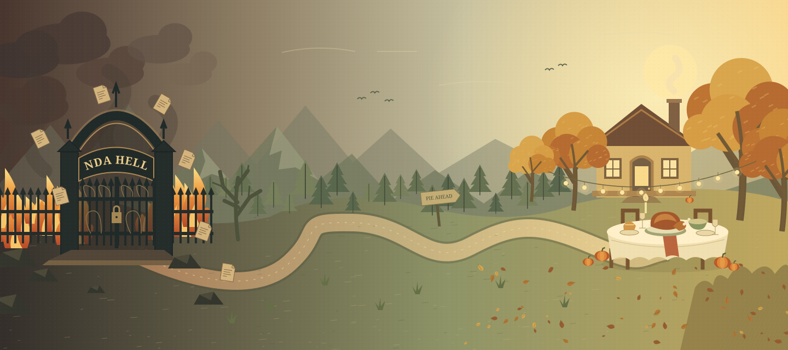

Non-Disclosure Inferno
Where the clauses are endless, the signatures are binding, and “one quick revision” is a threat.
FROM THE FINE PRINT TO THE FINEST PIE
One tiny human. An unreasonable amount of paperwork.
A very good reason to keep walking.

← Swipe to explore the whole journey →
CURRENT PREDICAMENT
The road is long. The pie is worth it.
The calendar moves. So do you. Calculated in your local time.
A preview only. Sadly, this does not make Thanksgiving arrive sooner.
A FIELD GUIDE TO YOUR ESCAPE
Where the clauses are endless, the signatures are binding, and “one quick revision” is a threat.
Follow the road. Dodge the follow-ups. You can almost smell something that isn’t a printer on fire.
The fourth Thursday of November. A seat at the table. At last, something you’re allowed to spill.